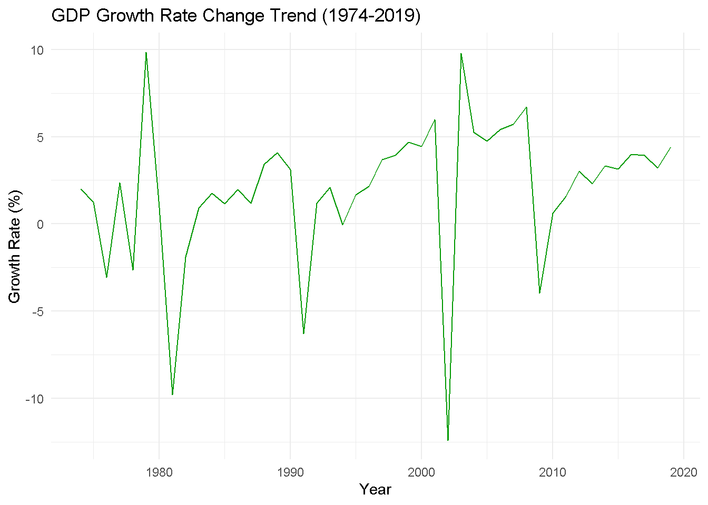

Untitled
Quarto
Quarto enables you to weave together content and executable code into a finished document. To learn more about Quarto see https://quarto.org.
Running Code
interactive map
The echo: false option disables the printing of code (only output is displayed).
Scope of Madagascar
library(leaflet)
madagascar_Antananarivo <- c(-18.8792, 47.5079)
madagascar_map_world <- leaflet() |>
addProviderTiles(providers$Esri.NatGeoWorldMap) |>
setView(lng = madagascar_Antananarivo[2], lat = madagascar_Antananarivo[1], zoom = 6) |>
addCircles(lng = madagascar_Antananarivo[2], lat = madagascar_Antananarivo[1],
radius = 800000,
color = '#D90429',
fillColor = '#D90429',
fillOpacity = 0.7,
weight = 2,
dashArray = '5, 5',
popup = "Capital: Antananarivo")
madagascar_map_worldEconomic and demographic analysis
colnames(madagascar_data)[5:ncol(madagascar_data)] <- gsub("\\s\\[YR\\d{4}\\]", "", colnames(madagascar_data)[5:ncol(madagascar_data)])# Load required libraries
library(ggplot2)
library(tidyr)
library(dplyr)
library(readr)
# 1. Load and process the data
madagascar_data <- read_csv("data_new/df993292-7ac5-4c8b-9730-79a2610df483_Data.csv")Rows: 1496 Columns: 54
── Column specification ────────────────────────────────────────────────────────
Delimiter: ","
chr (54): Country Name, Country Code, Series Name, Series Code, 1974 [YR1974...
ℹ Use `spec()` to retrieve the full column specification for this data.
ℹ Specify the column types or set `show_col_types = FALSE` to quiet this message.# 2. Clean column names
colnames(madagascar_data)[5:ncol(madagascar_data)] <- gsub("\\s\\[YR\\d{4}\\]", "", colnames(madagascar_data)[5:ncol(madagascar_data)])
# 3. Filter population-related indicators
filtered_data <- madagascar_data |>
filter(`Series Name` %in% c('Population, total', 'Population growth (annual %)', 'Life expectancy at birth, total (years)')) |>
select(-c(`Country Name`, `Country Code`, `Series Code`))
# 4. Reshape data from wide to long format
long_data <- filtered_data |>
pivot_longer(cols = `1974`:`2019`, names_to = "Year", values_to = "Value") |>
mutate(
Year = as.numeric(Year),
Value = as.numeric(gsub("[^0-9.-]", "", Value))
)
# 5. Plot population total change trend
population_total <- long_data |>
filter(`Series Name` == 'Population, total')
ggplot(population_total, aes(x = Year, y = Value)) +
geom_line(color = "#0077B6") +
labs(title = "Population Change Trend (1974-2019)", x = "Year", y = "Total Population") +
theme_minimal()
# 6. Plot life expectancy change trend
life_expectancy <- long_data |>
filter(`Series Name` == 'Life expectancy at birth, total (years)')
ggplot(life_expectancy, aes(x = Year, y = Value)) +
geom_line(color = "#6A0572") +
labs(title = "Life Expectancy Trend (1974-2019)", x = "Year", y = "Life Expectancy (Years)") +
theme_minimal()# Load required libraries
library(ggplot2)
library(tidyr)
library(dplyr)
library(readr)
# 1. Load and process the data
madagascar_data <- read_csv("data_new/df993292-7ac5-4c8b-9730-79a2610df483_Data.csv")Rows: 1496 Columns: 54
── Column specification ────────────────────────────────────────────────────────
Delimiter: ","
chr (54): Country Name, Country Code, Series Name, Series Code, 1974 [YR1974...
ℹ Use `spec()` to retrieve the full column specification for this data.
ℹ Specify the column types or set `show_col_types = FALSE` to quiet this message.# 2. Clean column names
colnames(madagascar_data)[5:ncol(madagascar_data)] <- gsub("\\s\\[YR\\d{4}\\]", "", colnames(madagascar_data)[5:ncol(madagascar_data)])
# 3. Filter economic-related indicators
filtered_data <- madagascar_data |>
filter(`Series Name` %in% c('GDP (current US$)', 'GDP growth (annual %)', 'GDP per capita (current US$)')) |>
select(-c(`Country Name`, `Country Code`, `Series Code`))
# 4. Reshape data from wide to long format
long_data <- filtered_data |>
pivot_longer(cols = `1974`:`2019`, names_to = "Year", values_to = "Value") |>
mutate(
Year = as.numeric(Year),
Value = as.numeric(gsub("[^0-9.-]", "", Value))
)
# 5. Plot GDP total change trend
gdp_total <- long_data |>
filter(`Series Name` == 'GDP (current US$)')
ggplot(gdp_total, aes(x = Year, y = Value / 1e9)) + # Convert GDP to billions
geom_line(color = "#D00000") +
labs(title = "GDP Total Change Trend (1974-2019)", x = "Year", y = "GDP (Billion USD)") +
theme_minimal()# 6. Plot GDP growth rate change trend
gdp_growth <- long_data |>
filter(`Series Name` == 'GDP growth (annual %)')
ggplot(gdp_growth, aes(x = Year, y = Value)) +
geom_line(color = "#009900") +
labs(title = "GDP Growth Rate Change Trend (1974-2019)", x = "Year", y = "Growth Rate (%)") +
theme_minimal()
# Load required libraries
library(gridExtra)
Attaching package: 'gridExtra'The following object is masked from 'package:dplyr':
combinelibrary(grid)
# 1. Define SWOT content
strengths <- c(
"One of the world's top biodiversity hotspots",
"Unique natural heritage: more than 80% of Madagascar's flora and fauna are endemic",
"Coastal tourism attractions"
)
weaknesses <- c(
"Lack of supportive policies and regulations",
"Unfavorable investment climate for tourism development",
"Poor airline connectivity",
"Inadequately skilled labor force"
)
opportunities <- c(
"Investment finance through the 'Funds for the Promotion of Private Business'",
"Tourism product diversification (e.g., adventure, special interest tourism, etc.)",
"Establishment of ecotourism investment zones",
"Emerging markets in Africa and Asia"
)
threats <- c(
"Lack of an 'open skies' policy",
"Perception of poor governance and political instability",
"Environmental degradation and deforestation",
"Impact of climate change",
"Vulnerability to natural disasters (e.g., drought, cyclones, floods, etc.)"
)
# 2. Create SWOT tables
strengths_table <- tableGrob(matrix(strengths, ncol = 1),
theme = ttheme_default(core=list(fg_params=list(fontsize=10))))
weaknesses_table <- tableGrob(matrix(weaknesses, ncol = 1),
theme = ttheme_default(core=list(fg_params=list(fontsize=10))))
opportunities_table <- tableGrob(matrix(opportunities, ncol = 1),
theme = ttheme_default(core=list(fg_params=list(fontsize=10))))
threats_table <- tableGrob(matrix(threats, ncol = 1),
theme = ttheme_default(core=list(fg_params=list(fontsize=10))))
# 3. Arrange SWOT components into a 2x2 grid
grid.arrange(
arrangeGrob(strengths_table, top = textGrob("Strengths", gp = gpar(fontsize = 14, fontface = "bold"))),
arrangeGrob(weaknesses_table, top = textGrob("Weaknesses", gp = gpar(fontsize = 14, fontface = "bold"))),
arrangeGrob(opportunities_table, top = textGrob("Opportunities", gp = gpar(fontsize = 14, fontface = "bold"))),
arrangeGrob(threats_table, top = textGrob("Threats", gp = gpar(fontsize = 14, fontface = "bold"))),
nrow = 2
)